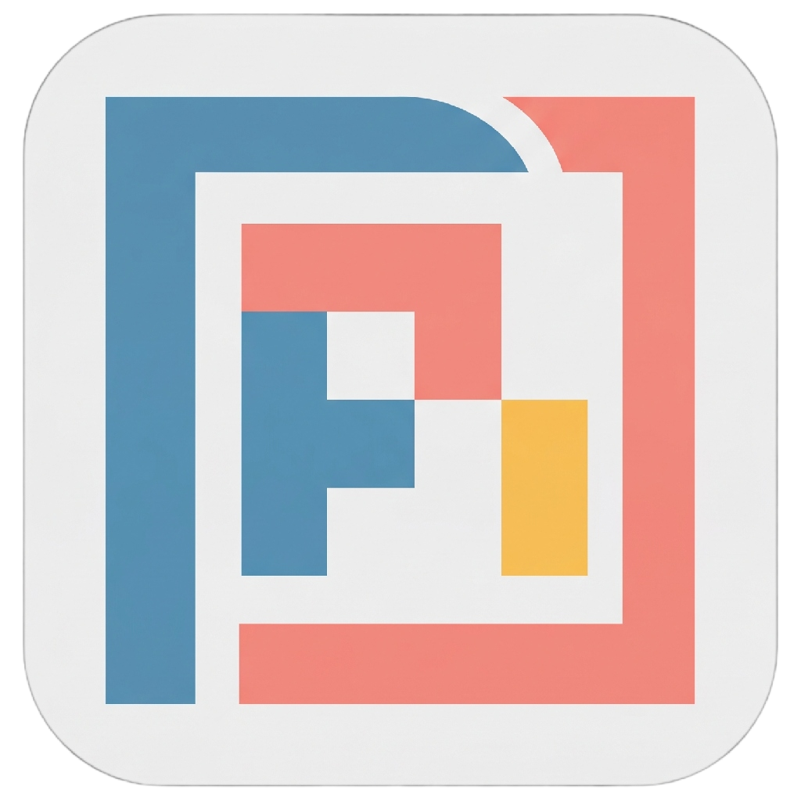
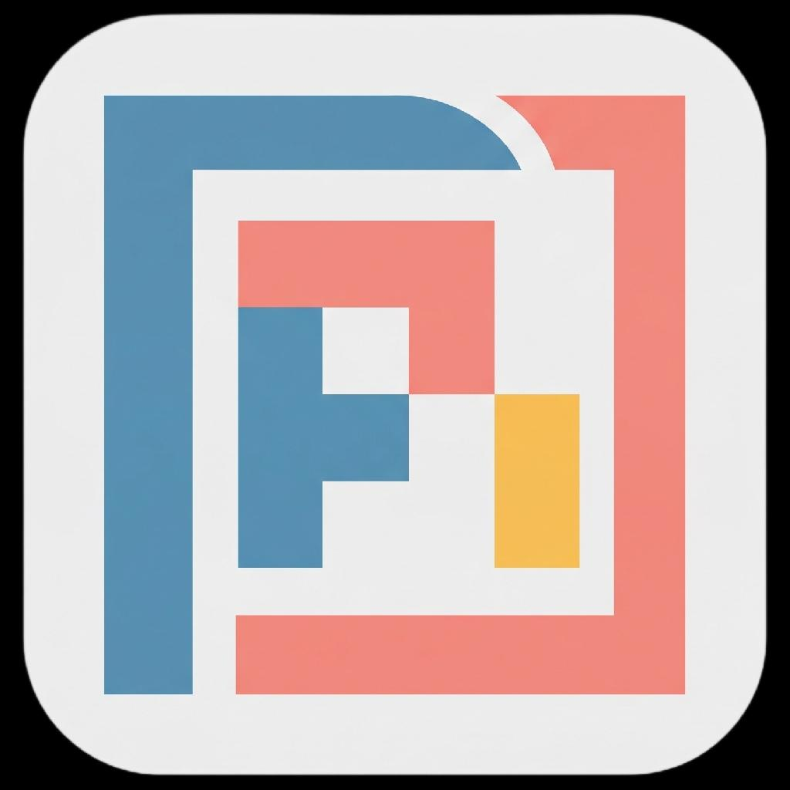

📐 PiFrame Official App Icon Production Asset
Official PiFrame application icon system. Features geometric precision, crisp typography framing, and harmonious light & dark palettes matching Catppuccin theme tokens.
🌙 Dark Theme (Catppuccin Frappé)


☀️ Light Theme (Catppuccin Latte)



Multi-Resolution Legibility Ladder (512px down to 16px)
Verifying crisp silhouette, centered glyph recognition, and lack of visual blur across standard desktop display densities.
128px
96px
64px
48px
32px
24px
16px

Design Foundations
Architectural Geometry & Hierarchy
- Interlocking PiFrame Geometry: The stylized 'P' and bounding frame interlock to communicate structural stability and workspace organization.
- Cohesive Theme Contrast: Designed with dedicated dark and light variants that harmonize with desktop system dark/light modes.
- Crisp Squircle Silhouette: Continuous squircle curvature matches native macOS and modern Windows application canvas standards.
- Strict Palette Discipline: Coordinated pastel blue, coral, and amber accents over neutral dark navy and soft off-white canvases.
Theme Palette Color Mapping
| Role | Dark Theme (Frappé) | Light Theme (Latte) | Design Function |
|---|---|---|---|
| Squircle Canvas | #181a24 (Dark Base) | #f2f2f4 (Light Base) | Matte desktop background tile |
| Pi Glyph (Blue) | #5c90b0 (Soft Blue) | #5c90b0 (Soft Blue) | Primary Pi identifier element |
| Frame (Coral) | #ec8072 (Coral) | #ec8072 (Coral) | Bounding structural frame |
| Accent Dot (Amber) | #eab348 (Warm Amber) | #eab348 (Warm Amber) | Focal visual anchor point |